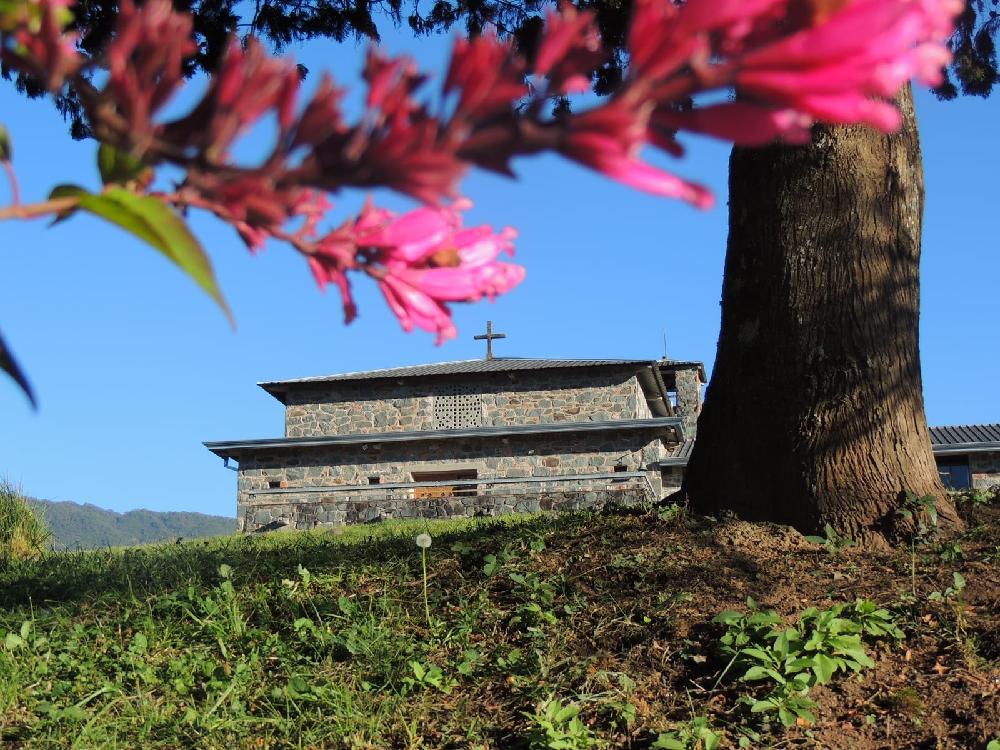
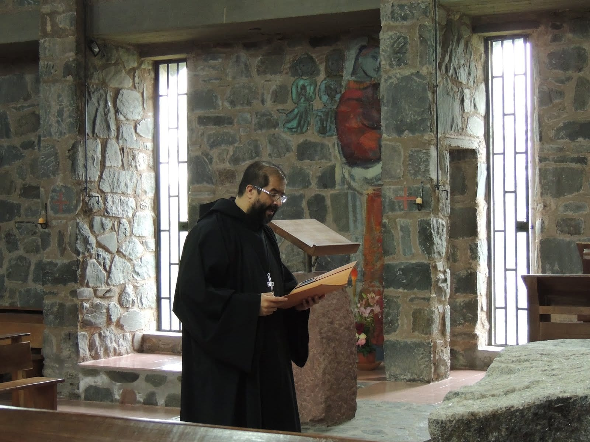
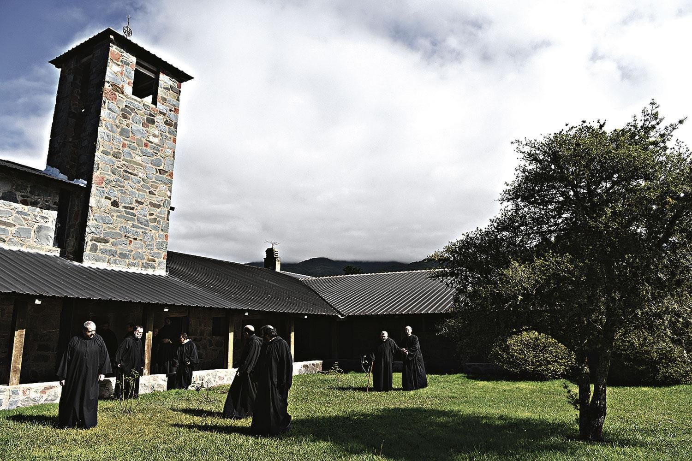
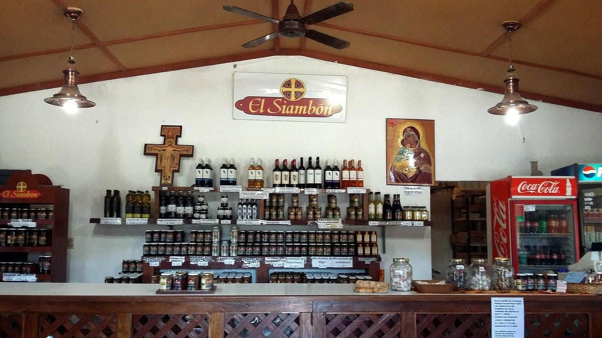

Monasterio
Cristo Rey
Un espacio de paz, oración y hospitalidad benedictina en las montañas de Tucumán.
En las montañas de Tucumán, el Monasterio Cristo Rey ofrece un espacio de paz y espiritualidad benedictina. Es un lugar de oración, trabajo y hospitalidad, rodeado de la belleza natural de El Siambón, donde la fe y la contemplación brindan armonía al cuerpo y al alma.

Nuestra historia
El Monasterio Cristo Rey, fundado en 1956 en El Siambón, Tucumán, revitalizó la vida monástica en Argentina. Además de ser un centro de oración, benefició a la comunidad con servicios como la electricidad. Sigue siendo un lugar de paz y espiritualidad.

¿En qué se fundamenta nuestra vida?
Nuestra vida se basa en la oración constante, el trabajo como santificación, y la convivencia en comunidad. La oración personal y litúrgica guía nuestro día, mientras que el trabajo diario es un acto de servicio a Dios. Vivimos en fraternidad, buscando el crecimiento espiritual y ofreciendo un espacio de paz a quienes buscan retiro y reflexión.

La comunidad monástica del Monasterio Cristo Rey abre sus puertas y comparte su vida a través de retiros espirituales, visitas y experiencias de inmersión en la oración y la paz. Los huéspedes llegan en busca de un encuentro profundo con el Señor, alejados del bullicio cotidiano, rodeados de la serenidad de la naturaleza y la vida contemplativa. Aquí, en este refugio de silencio y oración, cada visitante puede experimentar la espiritualidad benedictina y encontrar un espacio para la reflexión y el crecimiento personal.

La Comunidad Monástica del Monasterio Cristo Rey ofrece productos elaborados con el esfuerzo y dedicación de los monjes, como un acto de trabajo en unidad con Dios. Estos productos no solo son fruto de su labor, sino también una expresión del compromiso con la vida monástica y la espiritualidad. Cada artículo refleja el esfuerzo por cooperar en la creación de un ambiente de paz y prosperidad, compartiendo con todos lo bendecido por Dios para el bien de la comunidad y los visitantes.